Plateforme de gestion d'école primaire
Établissement : _[À compléter]_
Version du document : 1.0
Date : _[À compléter]_
Ce manuel a pour objectif d'accompagner les administrateurs, enseignants et élèves dans la prise en main quotidienne de l'application. Il ne requiert aucune connaissance informatique particulière.
6.1 Espace Administrateur
6.2 Espace Enseignant
6.3 Espace Élève
7.1 Le tableau de bord
7.2 Gestion des administrateurs
7.3 Gestion des enseignants
7.4 Gestion des élèves
7.5 Gestion des classes
7.6 Gestion des cycles et du calendrier scolaire
7.7 Gestion des cours
7.8 Gestion des évaluations
7.9 Gestion des notes
7.10 Gestion des bulletins
7.11 Gestion des emplois du temps
7.12 Gestion des paiements
7.13 Gestion de la discipline
8.1 Créer un élève
8.2 Créer une classe
8.3 Désigner un professeur titulaire
8.4 Créer une évaluation
8.5 Saisir les notes
8.6 Enregistrer un paiement
8.7 Consulter un bulletin
Scholarly, commercialisé sous le nom BrightPath Academy, est une application de gestion administrative et pédagogique conçue pour les écoles primaires. Elle réunit dans un seul outil les tâches qui, autrement, seraient réparties entre des registres papier, des tableurs et des échanges informels : inscription des élèves, organisation des classes, suivi des enseignants, saisie des notes, édition des bulletins, gestion des emplois du temps, suivi des paiements de scolarité et suivi de la discipline.
Ce manuel décrit, étape par étape, comment utiliser chacune des fonctionnalités de l'application. Il s'adresse à toute personne amenée à s'en servir au quotidien, qu'elle soit à l'aise avec l'informatique ou qu'elle découvre ce type d'outil pour la première fois. Aucune connaissance technique n'est nécessaire : ce document explique uniquement comment utiliser le logiciel, pas comment il a été construit.
Chaque grande fonctionnalité est illustrée par une capture d'écran réelle de l'application, afin que vous puissiez reconnaître immédiatement ce que vous voyez à l'écran.
BrightPath Academy organise le fonctionnement de l'école autour de quelques notions simples, qui reviennent dans tous les modules :
L'ensemble de ces informations est centralisé et accessible selon le profil de la personne connectée : un administrateur voit l'intégralité de l'école, un enseignant voit ses propres classes et élèves, un élève ne voit que son propre dossier.
Ce manuel s'adresse à trois catégories d'utilisateurs, chacune disposant d'un espace de travail dédié dans l'application :
| Profil | Rôle dans l'application |
|---|---|
| Administrateur (direction, secrétariat) | Pilotage complet de l'école : inscriptions, classes, enseignants, cours, évaluations, paiements, discipline. |
| Enseignant | Suivi de ses propres classes, saisie des notes, consultation de son emploi du temps et de ses statistiques. |
| Élève | Consultation de ses notes, de son bulletin, de son emploi du temps et du suivi de ses paiements. |
Chaque profil ne voit que les fonctionnalités qui le concernent : un enseignant, par exemple, ne peut ni créer de nouvelles classes ni consulter les dossiers d'élèves qu'il n'encadre pas.
L'utilisation de BrightPath Academy ne nécessite aucune installation. L'application fonctionne directement dans un navigateur web.
Ce qu'il vous faut :
Aucune compétence informatique particulière n'est requise pour utiliser l'application au quotidien.
L'écran de connexion est le point d'entrée unique de l'application, quel que soit votre profil.
Pour vous connecter :
Une icône en forme d'œil, à droite du champ mot de passe, permet d'afficher ou de masquer temporairement votre saisie pour vérifier qu'elle est correcte.
Si vos identifiants sont incorrects, un message d'erreur clair s'affiche et vous invite à réessayer. Si le problème persiste, contactez l'administration : seul un administrateur peut réinitialiser un mot de passe oublié (voir la section Questions fréquentes).
Une fois connecté, vous êtes automatiquement redirigé vers l'espace correspondant à votre profil : tableau de bord administrateur, espace enseignant ou espace élève.
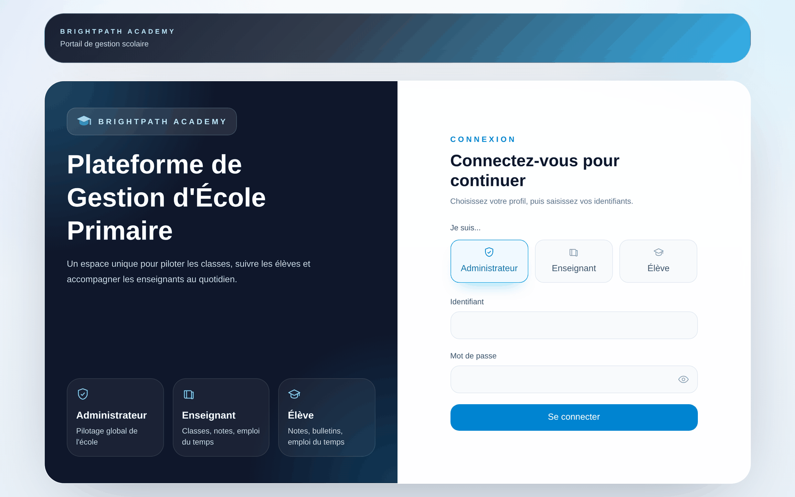
Figure 1 — Écran de connexion : sélection du profil et saisie des identifiants.
Chaque profil dispose d'un espace organisé autour d'un menu latéral, à gauche de l'écran, qui donne accès à l'ensemble des modules disponibles pour ce profil. Le contenu de ce menu change selon que vous êtes connecté en tant qu'administrateur, enseignant ou élève.
L'espace administrateur est le plus complet des trois : il donne accès à l'ensemble des modules de gestion de l'école — élèves, enseignants, classes, cours, cycles, évaluations, emplois du temps, paiements et discipline.
Le tableau de bord qui s'affiche à la connexion présente une vue d'ensemble synthétique de l'établissement : effectifs, nombre de classes, nombre d'enseignants, et raccourcis vers les actions les plus courantes.
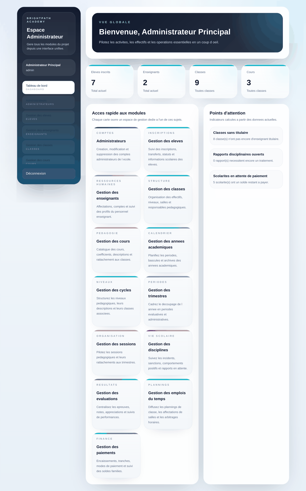
Figure 2 — Tableau de bord de l'espace Administrateur.
L'espace enseignant se concentre sur les classes et les élèves dont l'enseignant a la charge. Il permet de consulter ses classes, la liste de ses élèves, son emploi du temps personnel, de créer des évaluations, de saisir des notes et de consulter des statistiques de performance sur ses propres cours.
Un enseignant ne voit que les données qui le concernent directement : il ne peut ni consulter les classes d'un collègue, ni modifier des informations administratives comme la création de nouvelles classes ou de nouveaux comptes.
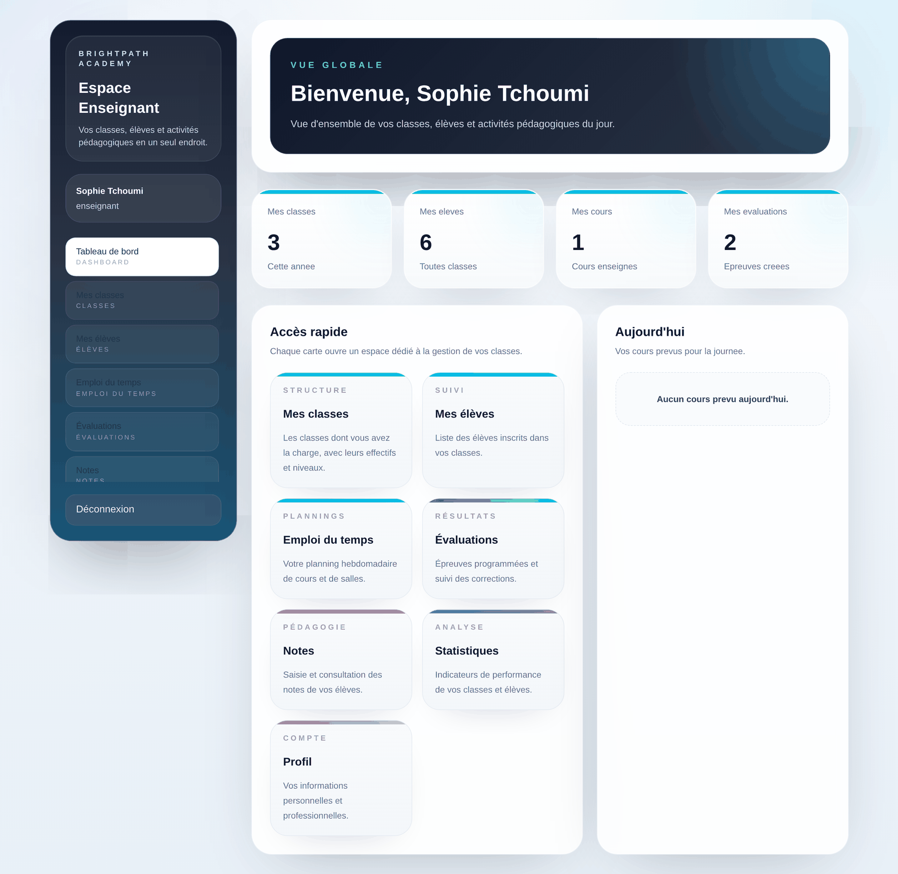
Figure 3 — Tableau de bord de l'espace Enseignant.
L'espace élève est le plus simple des trois : un élève y consulte ses propres informations — ses notes, son bulletin, son emploi du temps, l'état de ses paiements de scolarité et son historique disciplinaire éventuel. Il ne dispose d'aucune fonction de modification : cet espace est entièrement dédié à la consultation.
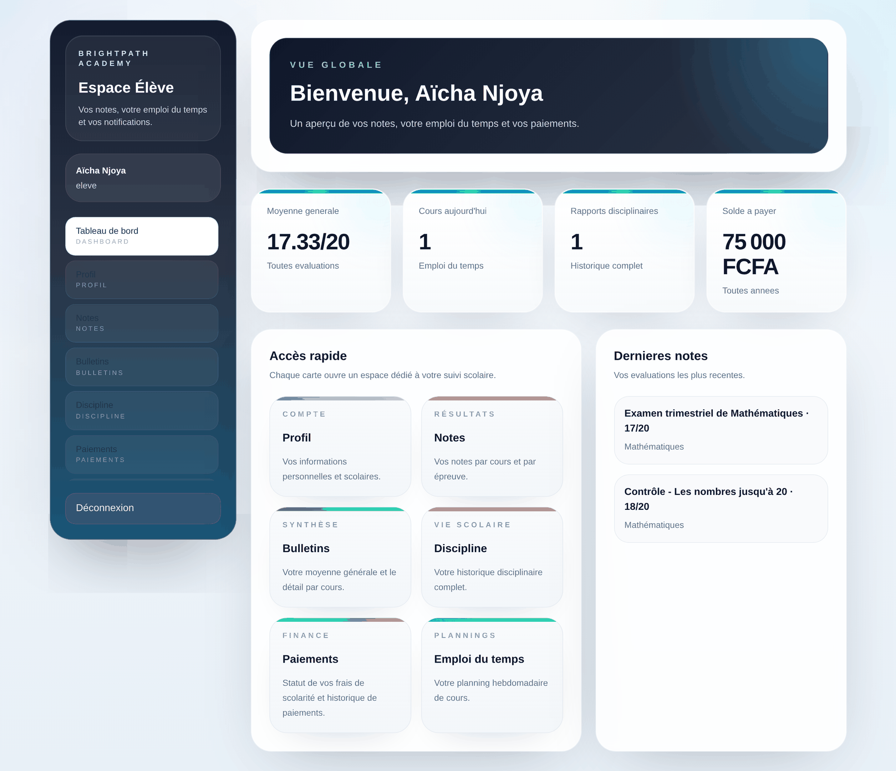
Figure 4 — Tableau de bord de l'espace Élève.
Cette section détaille chacun des modules de l'application. Certains modules fonctionnent selon des principes très proches les uns des autres ; ces principes communs sont expliqués une seule fois, la première fois qu'ils apparaissent, pour éviter les répétitions inutiles.
Le tableau de bord est le premier écran affiché après la connexion, pour les trois profils. Il joue le rôle d'un point de départ : il résume les informations essentielles sous forme de chiffres clés (nombre d'élèves, de classes, de notes saisies, etc.) et propose des raccourcis vers les modules les plus utilisés, sous forme de cartes cliquables.
Le contenu du tableau de bord s'adapte automatiquement au profil connecté : un administrateur y voit une vue globale de l'établissement, un enseignant une vue centrée sur ses classes, et un élève un résumé de sa situation personnelle (dernières notes, paiements, emploi du temps du jour).
Réservée au profil administrateur, cette section permet de créer, modifier ou retirer des comptes administrateurs — les personnes habilitées à piloter l'école dans l'application. Le principe est identique à celui décrit plus loin pour la gestion des enseignants et des élèves : une liste avec recherche, un formulaire de création (nom, prénom, identifiant de connexion, mot de passe, téléphone) et une fiche de modification. Aucune capture dédiée n'est nécessaire : la logique est la même que pour les autres comptes utilisateurs, en plus simple, puisqu'un administrateur n'est rattaché à aucune classe ni à aucun cours.
Ce module permet de créer et de suivre les comptes des enseignants de l'établissement.
Un enseignant peut enseigner plusieurs cours, dans plusieurs classes différentes. Par exemple, un même enseignant peut assurer les Mathématiques en CP, en CE1 et en CE2. Chacune de ces combinaisons « cours + classe » est appelée une affectation.
À la création d'un compte enseignant, vous renseignez son identité (nom, prénom, date et lieu de naissance), ses coordonnées, son identifiant de connexion, son mot de passe, ainsi qu'une première affectation obligatoire : le cours qu'il enseignera, dans quelle classe.
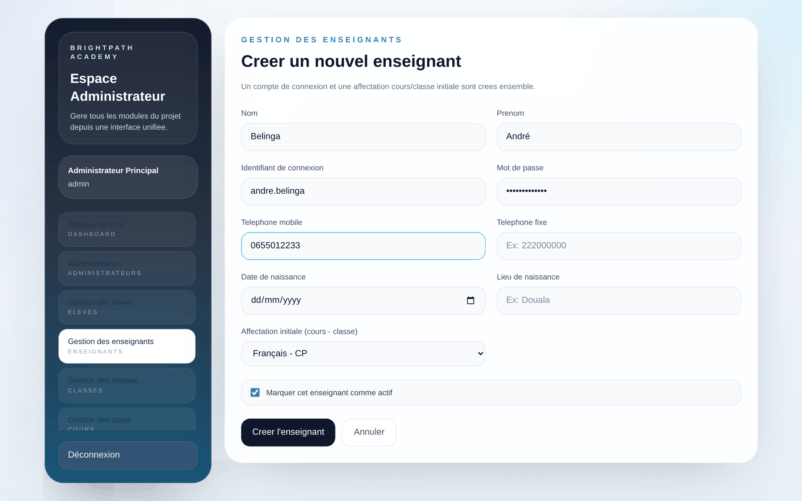
Figure 5 — Formulaire de création d'un enseignant, avec son affectation initiale.
Une fois le compte créé, sa fiche détaillée permet d'ajouter ou de retirer des affectations supplémentaires à tout moment, sans limite de nombre. Chaque affectation apparaît sous la forme d'une ligne « cours — classe », avec un bouton pour la retirer si l'enseignant cesse d'assurer ce cours dans cette classe.
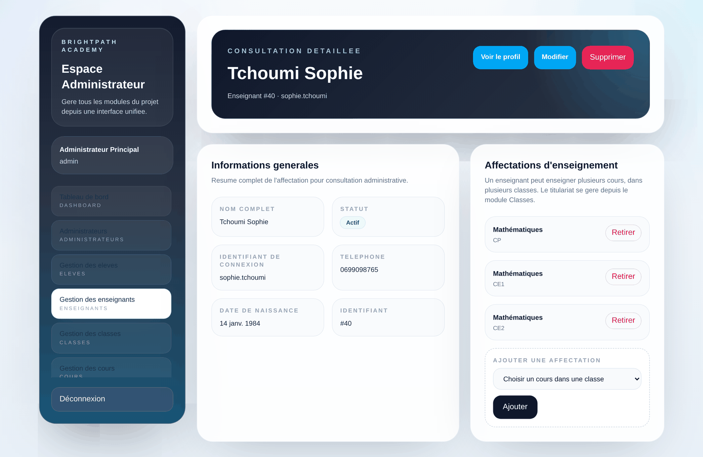
Figure 6 — Fiche détaillée d'un enseignant : gestion de ses affectations d'enseignement.
Cette fiche illustre bien la distinction essentielle du module : les affectations d'enseignement (ce que l'enseignant enseigne, et où) sont totalement indépendantes du titulariat d'une classe (la responsabilité pédagogique globale d'une classe), qui se gère depuis le module Classes (voir section 7.5). Un enseignant peut ainsi enseigner dans plusieurs classes tout en n'étant titulaire que d'une seule d'entre elles — ou d'aucune.
La suppression d'un enseignant retire automatiquement son compte, l'ensemble de ses affectations et, le cas échéant, son titulariat, sans laisser de trace incohérente dans l'application.
Ce module regroupe l'ensemble des informations relatives aux élèves inscrits dans l'établissement : identité, classe, statut (actif ou inactif) et identifiants de connexion.
La liste des élèves peut être filtrée et recherchée par nom, ce qui facilite le repérage d'un dossier particulier dans un établissement comptant de nombreux effectifs.
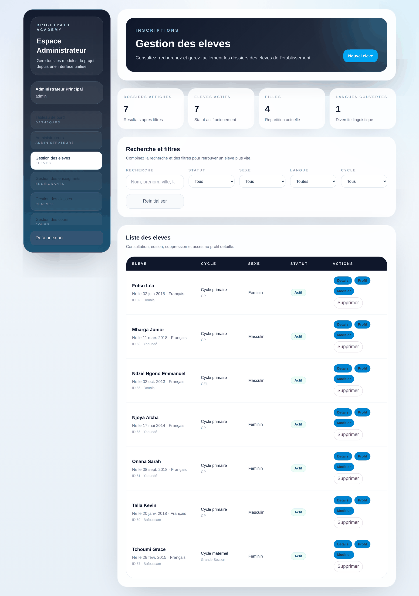
Figure 7 — Liste des élèves, avec recherche et filtres.
La création d'un élève reprend le principe commun à tous les formulaires de compte de l'application : identité complète (nom, prénom, date et lieu de naissance, sexe, langue), identifiant de connexion, mot de passe, puis affectation à une classe. Le cycle (maternel ou primaire) de l'élève est déterminé automatiquement en fonction de la classe choisie ; il n'a pas à être renseigné séparément.
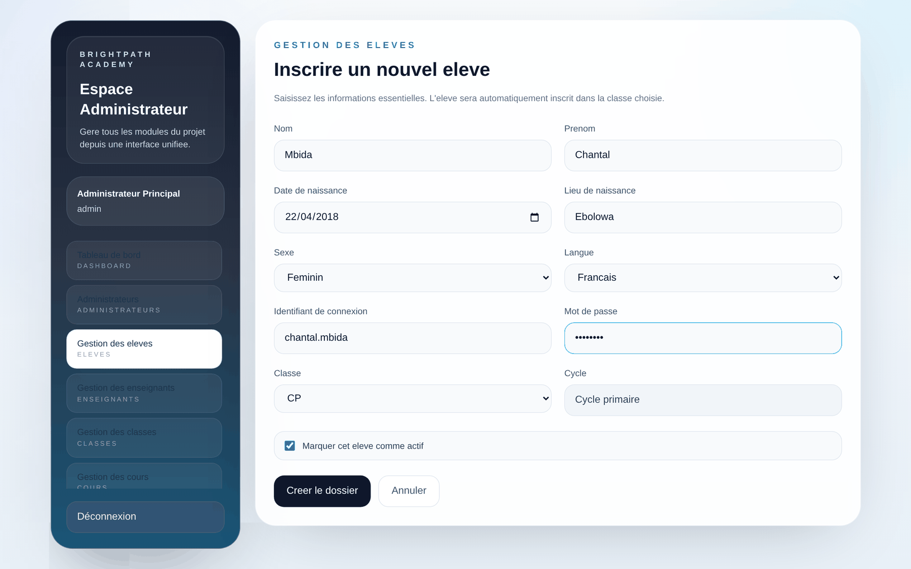
Figure 8 — Formulaire de création d'un élève.
L'application vérifie automatiquement la cohérence de la date de naissance saisie : une date future ou manifestement irréaliste est rejetée avec un message d'explication, ce qui évite les erreurs de saisie.
Depuis la fiche détaillée d'un élève, vous accédez également à son profil pédagogique complet — notes, bulletin, historique disciplinaire, paiements — sans avoir à naviguer entre plusieurs modules séparés.
Une classe regroupe un ensemble d'élèves, appartient à un cycle et dispose d'une salle. La liste des classes de l'établissement donne un aperçu rapide de chaque niveau, avec son effectif et son cycle d'appartenance.
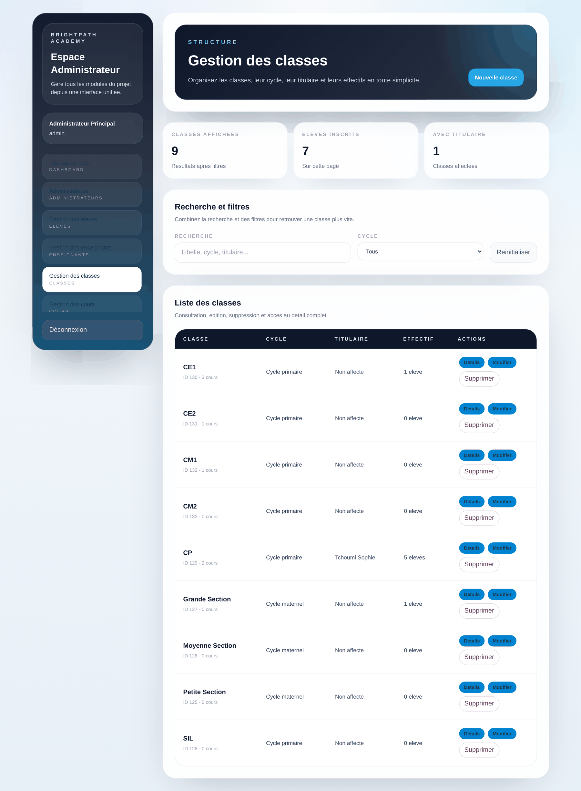
Figure 9 — Liste des classes de l'établissement.
La fiche détaillée d'une classe est l'écran central du module. Elle réunit :
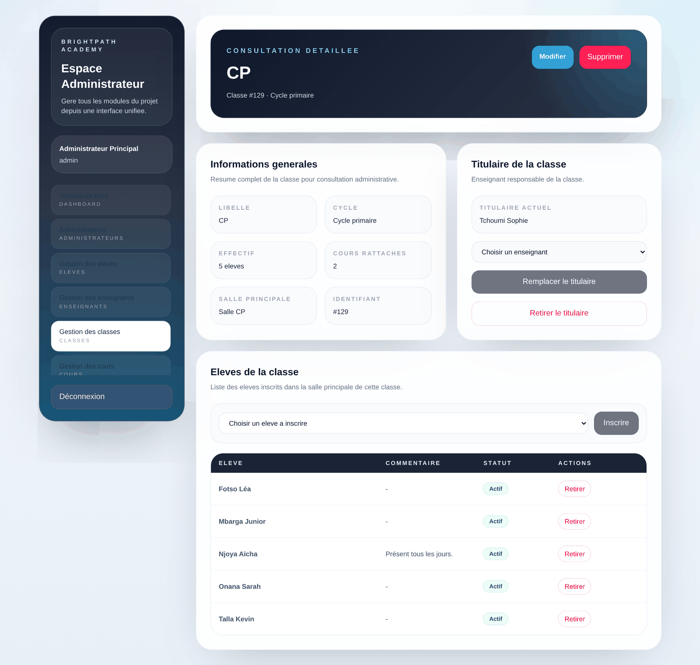
Figure 10 — Fiche détaillée d'une classe : titulaire et élèves inscrits.
Un élève ne peut jamais être inscrit dans deux classes en même temps : l'inscrire dans une nouvelle classe le retire automatiquement de la précédente. Ce mécanisme garantit qu'à tout moment, la situation scolaire de chaque élève reste cohérente.
La suppression d'une classe entraîne le retrait propre de toutes les données qui lui sont rattachées — élèves inscrits, titulariat, évaluations — sans laisser d'information orpheline dans l'application.
L'établissement est structuré autour de deux cycles fixes : le cycle maternel et le cycle primaire. Ces deux cycles existent par défaut et ne peuvent ni être supprimés ni renommés ; seule leur description peut être ajustée depuis le module Cycles.
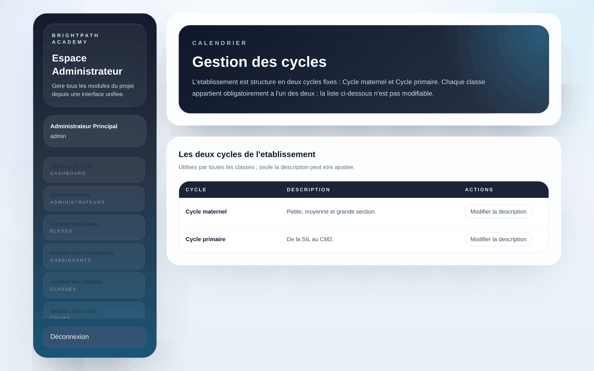
Figure 11 — Les deux cycles fixes de l'établissement.
Ce module de calendrier comprend également, sous des onglets voisins, la gestion des années académiques (par exemple « 2025-2026 »), des trimestres qui la composent, et des sessions pédagogiques rattachées à chaque trimestre. Ces trois éléments suivent le même principe simple : un libellé, une période, et pour les trimestres et les sessions, un rattachement à l'élément parent (l'année académique pour un trimestre, le trimestre pour une session). Ils permettent de structurer le calendrier scolaire de l'établissement sur toute une année.
Le module Cours est l'un des plus structurants de l'application. Un cours représente une matière — Mathématiques, Français, Sciences... — et présente une particularité importante : un même cours peut être enseigné dans plusieurs classes à la fois. Ainsi, les Mathématiques peuvent être enseignées en CP, en CE1 et en CE2 sous la forme d'un seul et même cours, plutôt que d'être dupliquées en trois fiches distinctes.
La fiche détaillée d'un cours illustre bien ce principe : elle affiche l'ensemble des classes dans lesquelles le cours est actuellement enseigné, et pour chacune, les enseignants qui en ont la charge.
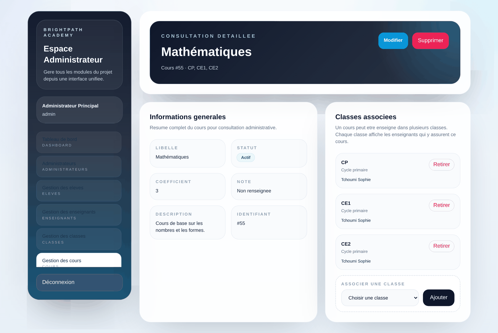
Figure 12 — Fiche détaillée d'un cours : classes associées et enseignants.
Vous pouvez, à tout moment, associer le cours à une classe supplémentaire ou l'en retirer, directement depuis cette fiche, sans avoir à passer par le module Enseignants.
À la création d'un nouveau cours, un ensemble de cases à cocher vous permet de sélectionner directement toutes les classes concernées :
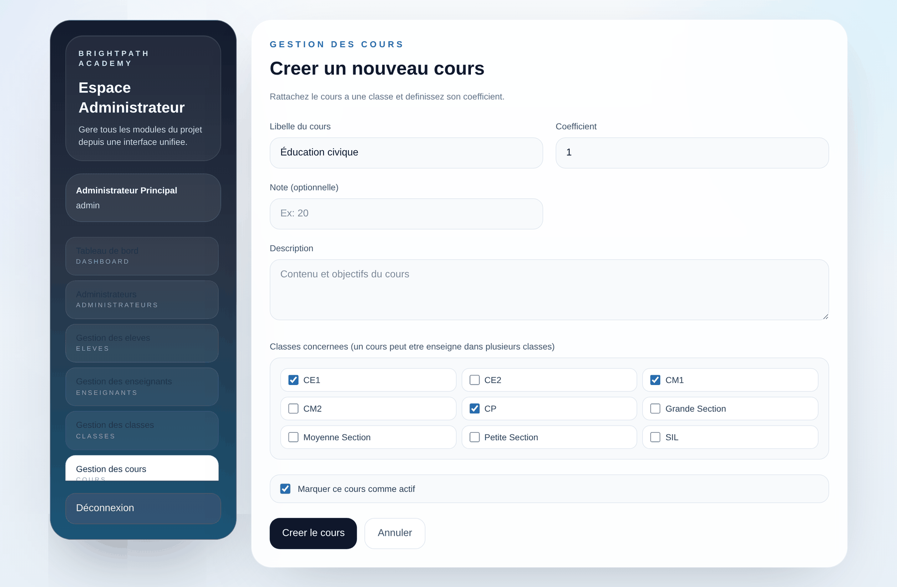
Figure 13 — Formulaire de création d'un cours : sélection de plusieurs classes.
Retirer un cours d'une classe supprime automatiquement les affectations d'enseignants qui y étaient liées pour cette classe précise ; les affectations de ce même cours dans les autres classes restent, elles, inchangées.
Une évaluation — appelée épreuve dans l'application — représente un contrôle ou un examen organisé pour une classe. Deux types d'épreuves sont proposés : Contrôle et Examen.
La création d'une épreuve se fait en deux temps : vous choisissez d'abord la classe concernée, puis, si vous le souhaitez, le cours précis auquel l'épreuve se rattache parmi ceux enseignés dans cette classe. Ce second choix affine simplement le rattachement de l'épreuve ; il reste facultatif.
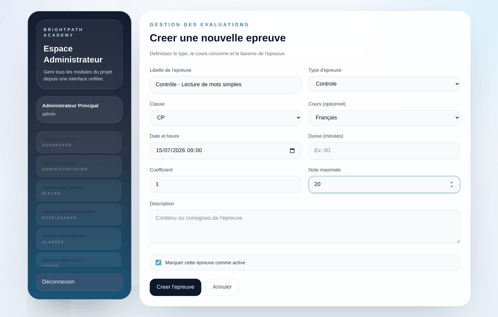
Figure 14 — Formulaire de création d'une évaluation.
Vous renseignez également le libellé de l'épreuve, sa date, sa durée, son coefficient et sa note maximale (le barème sur lequel elle est notée, généralement 20). Cette note maximale est ensuite utilisée automatiquement par l'application pour empêcher la saisie d'une note supérieure au barème.
Une fois l'épreuve créée, sa fiche détaillée affiche en temps réel les statistiques calculées à partir des notes saisies — moyenne de classe, meilleure note, note la plus faible — ainsi qu'un classement complet des élèves évalués, du premier au dernier.
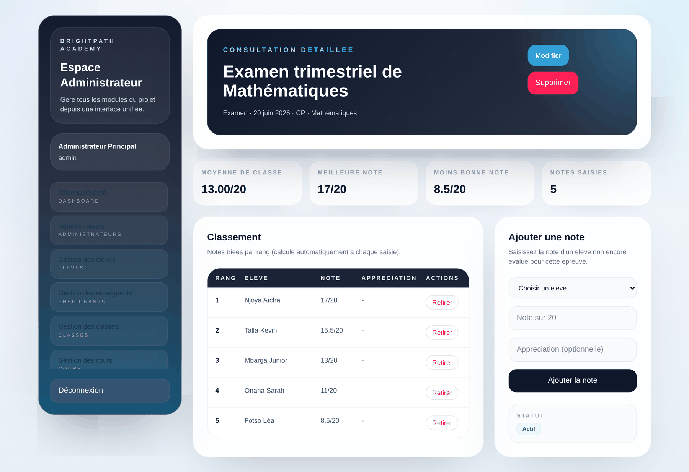
Figure 15 — Fiche détaillée d'une évaluation : statistiques et classement des élèves.
La saisie des notes s'effectue soit depuis la fiche d'une épreuve (module Évaluations, décrit ci-dessus), soit depuis l'espace enseignant, où chaque enseignant retrouve la liste de ses propres épreuves et peut y saisir directement les notes de ses élèves, épreuve par épreuve.
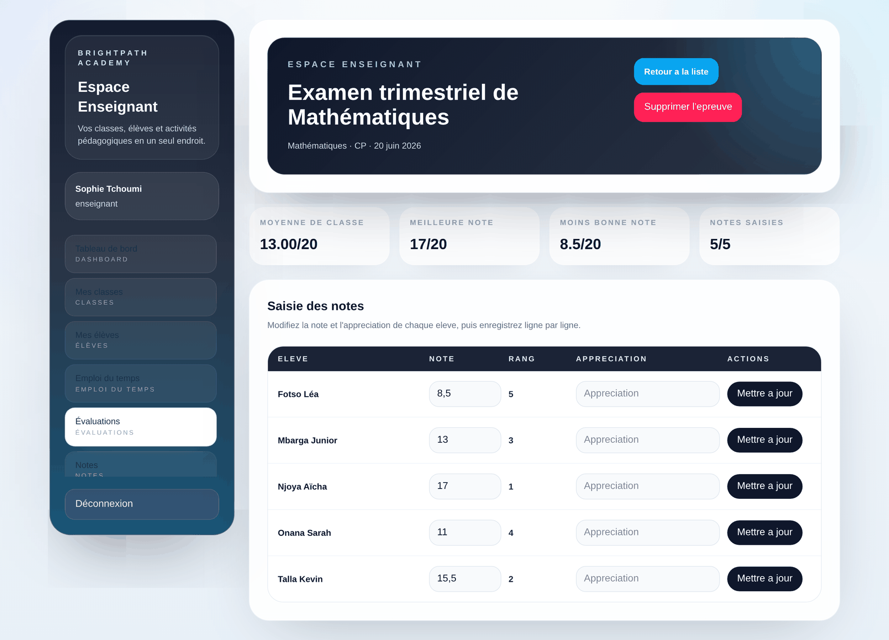
Figure 16 — Saisie des notes depuis l'espace enseignant.
Pour chaque élève de la classe concernée, vous renseignez la note obtenue et, si vous le souhaitez, une appréciation libre. Le rang de l'élève au sein de la classe se recalcule automatiquement à chaque nouvelle saisie, sans action supplémentaire de votre part.
L'application refuse toute note supérieure à la note maximale définie pour l'épreuve, avec un message d'erreur explicite, ce qui élimine les erreurs de saisie fréquentes lors de la correction de nombreuses copies.
Le bulletin d'un élève rassemble, sur un seul écran, sa moyenne générale ainsi que le détail de sa moyenne pour chacun des cours qu'il suit, avec le coefficient et le nombre d'évaluations pris en compte pour chacun.
Ces moyennes sont calculées automatiquement par l'application à partir de l'ensemble des notes déjà saisies, pondérées par le coefficient de chaque épreuve puis par celui de chaque cours. Aucun calcul manuel n'est nécessaire.
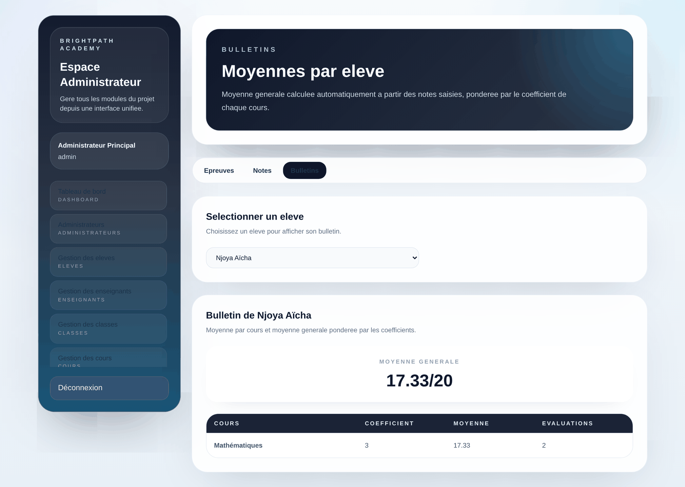
Figure 17 — Bulletin d'un élève : moyenne générale et détail par cours.
Côté administrateur, ce bulletin est consultable pour n'importe quel élève de l'établissement, en le sélectionnant dans une liste déroulante. Côté élève, chacun retrouve directement son propre bulletin, sans étape de sélection, dans son espace personnel.
Ce module permet de définir, classe par classe, les créneaux horaires hebdomadaires : jour, heure de début, heure de fin, cours dispensé et, si besoin, salle occupée. Chaque créneau est associé à une classe et à un cours ; l'application vérifie automatiquement l'absence de chevauchement horaire pour une même classe ou une même salle, afin d'éviter les conflits de planning.
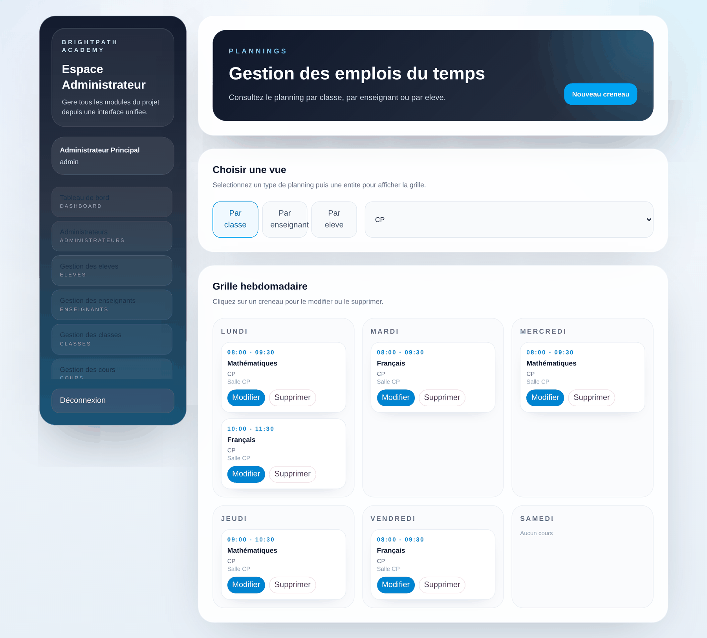
Figure 18 — Grille hebdomadaire d'emploi du temps.
Chaque enseignant retrouve, dans son propre espace, uniquement les créneaux correspondant aux cours qu'il assure dans les classes où il est affecté — sa grille personnelle se construit donc automatiquement à partir de ses affectations, sans configuration supplémentaire. Les élèves disposent du même principe : ils consultent la grille de leur classe depuis leur espace personnel.
Ce module suit le règlement des frais de scolarité. Il repose sur quatre éléments complémentaires, accessibles par onglets :
La liste des paiements permet de rechercher, filtrer par classe, mode ou statut, et de consulter en un coup d'œil le total encaissé.
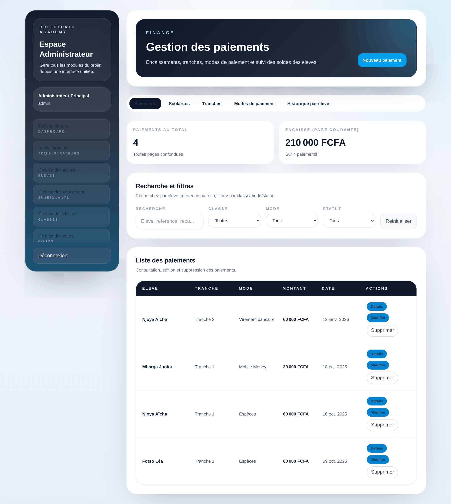
Figure 19 — Liste des paiements, avec recherche et filtres.
Pour enregistrer un nouveau paiement, vous sélectionnez la scolarité de l'élève concerné, la tranche réglée, le mode de paiement utilisé, le montant versé, ainsi que, si vous le souhaitez, une référence et un numéro de reçu.
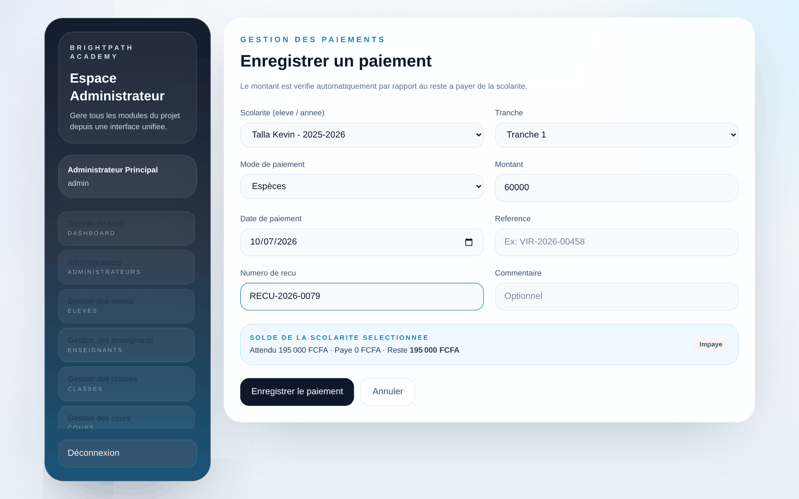
Figure 20 — Formulaire d'enregistrement d'un paiement.
Le statut de chaque scolarité — Impayé, Partiellement payé ou Payé — se met à jour automatiquement en fonction des versements enregistrés, sans calcul manuel. Un onglet Historique permet de consulter, pour un élève donné, l'ensemble de ses versements sur toute l'année.
Ce module permet de suivre le comportement des élèves, qu'il s'agisse de fautes ou de comportements positifs à valoriser.
Il repose sur deux niveaux : un catalogue de types de discipline (par exemple « Retard répété », « Bagarre » ou « Participation exemplaire »), chacun défini par sa nature (faute ou comportement positif), son degré de gravité et le type de sanction habituellement associé ; et des rapports individuels, qui consignent un incident précis pour un élève donné.
La liste des rapports donne une vue d'ensemble des incidents enregistrés, avec leur statut de traitement.
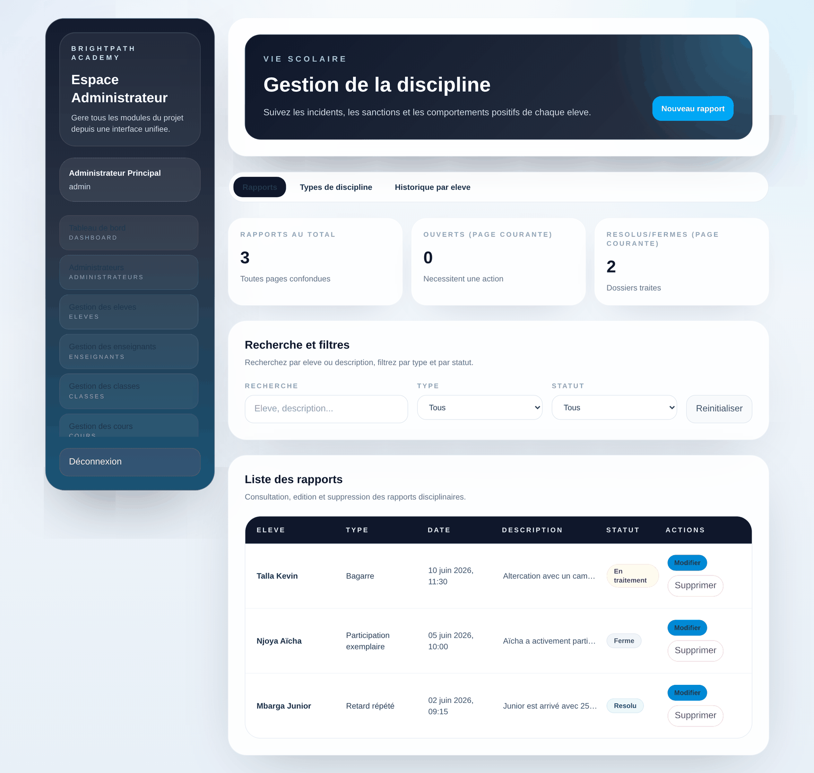
Figure 21 — Liste des rapports de discipline.
La création d'un rapport se fait en renseignant l'élève concerné, le type de discipline dans le catalogue, l'auteur du rapport, une description détaillée des faits, d'éventuels témoins et la sanction appliquée.
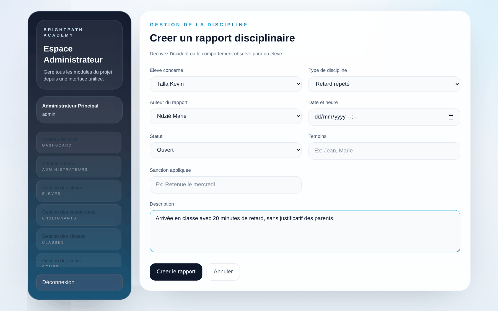
Figure 22 — Formulaire de création d'un rapport de discipline.
Chaque rapport suit un statut de traitement — Ouvert, En traitement, Résolu ou Fermé — que vous pouvez faire évoluer au fil du suivi du dossier. Un module Historique permet de consulter, pour un élève donné, l'ensemble de son parcours disciplinaire.
Cette section propose des parcours pas à pas pour les opérations les plus courantes. Elle s'appuie sur les modules déjà présentés en détail dans la section précédente ; reportez-vous aux figures correspondantes en cas de besoin.
L'élève apparaît immédiatement dans la liste et dans les effectifs de sa classe.
Une salle principale est automatiquement créée pour la nouvelle classe. Vous pouvez ensuite y inscrire des élèves et lui affecter un titulaire depuis sa fiche détaillée.
Deux cas particuliers peuvent se présenter :
L'épreuve est immédiatement disponible pour la saisie des notes.
Le classement et les statistiques de l'épreuve (moyenne, meilleure note, note la plus faible) se mettent à jour automatiquement à chaque saisie.
Le statut de la scolarité (Impayé, Partiellement payé, Payé) se met à jour automatiquement.
Depuis l'espace administrateur :
Depuis l'espace élève :
Dans les deux cas, la moyenne générale et le détail par cours s'affichent instantanément, calculés à partir des notes déjà saisies.
Un enseignant ou un élève a oublié son mot de passe : que faire ?
L'application ne dispose pas d'un système de réinitialisation automatique par e-mail. Un administrateur doit ouvrir la fiche de modification de la personne concernée et lui définir un nouveau mot de passe. Le champ mot de passe peut être laissé vide lors d'une modification si vous ne souhaitez pas le changer.
Peut-on inscrire un élève dans deux classes en même temps ?
Non. Inscrire un élève dans une nouvelle classe l'en retire automatiquement de son ancienne classe. Ce comportement est volontaire : il garantit qu'un élève n'appartient jamais qu'à une seule classe à la fois.
Un même enseignant peut-il être titulaire de deux classes ?
Non. Un enseignant peut enseigner dans plusieurs classes, mais n'être titulaire que d'une seule à la fois. Pour changer de titulaire, retirez d'abord l'ancien titulariat avant d'en affecter un nouveau.
Que se passe-t-il si je supprime une classe qui contient des élèves ?
La suppression d'une classe retire proprement toutes les données qui lui sont rattachées : élèves inscrits, titulariat, évaluations. Cette action est irréversible ; l'application vous demande toujours une confirmation avant de l'exécuter.
Un cours peut-il être enseigné par plusieurs enseignants différents ?
Oui, à condition que ce soit dans des classes différentes. Un même cours peut être assuré par un enseignant en CP et par un autre en CE1, par exemple.
Comment savoir si un paiement est complet ?
Le statut de la scolarité de l'élève (Impayé, Partiellement payé, Payé) est calculé et affiché automatiquement, sans qu'il soit nécessaire de faire le total manuellement.
Une note peut-elle dépasser le barème de l'épreuve ?
Non. L'application refuse systématiquement toute note supérieure à la note maximale définie pour l'épreuve, afin d'éviter les erreurs de saisie.
Un élève voit-il les notes ou les dossiers disciplinaires des autres élèves ?
Non. Chaque élève ne consulte que ses propres informations. De même, un enseignant ne voit que les classes dans lesquelles il est affecté.
BrightPath Academy centralise, dans un espace unique, l'ensemble des tâches administratives et pédagogiques d'une école primaire : inscriptions, classes, cours, enseignants, évaluations, bulletins, emplois du temps, paiements et discipline. Les principes qui structurent l'application — un cours pouvant être enseigné dans plusieurs classes, un enseignant pouvant cumuler plusieurs affectations tout en n'étant titulaire que d'une seule classe, des calculs automatiques de moyennes et de statuts — visent à limiter les tâches répétitives et les erreurs de saisie, tout en gardant une utilisation simple au quotidien.
Ce manuel couvre l'ensemble des fonctionnalités disponibles à ce jour. Pour toute question non traitée dans ce document, rapprochez-vous de l'administration de votre établissement.
Fin du manuel utilisateur.